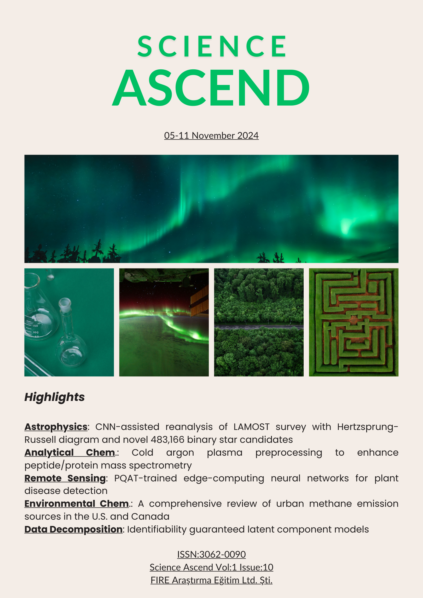
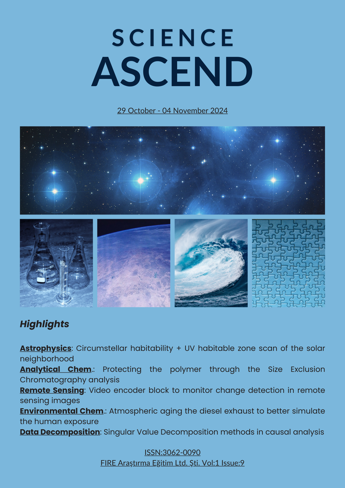
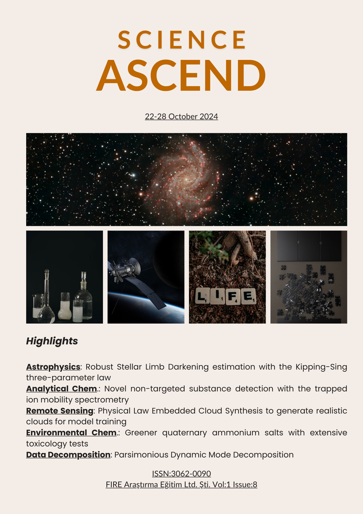

Science Ascend - Biannual Scientific Journal
Biannual journal of FIRE Araştırma Eğitim Ltd. Şti. on recent research in astronomy/astrophysics, relevant developments, key upcoming conferences and interesting focus articles, as well as interviews with key people.
This page presents the flagship journal of FIRE-AE, Science Ascend! Science Ascend reviews selected topics from the previous six month in astrophysics , provides key information on upcoming confereces/workshops, focus articles on hot topics in space and astrophysics, as well as conducts and publish interviews with key people.
- Publisher: FIRE Araştırma Eğitim Ltd. Şti.
- Responsible person - Editor in chief - Editor: Yasin Güray Hatipoğlu
- Authors: Yasin Güray Hatipoğlu
- Media: Online
- Publishing frequency: Biannual
- E-mail: fireae24@gmail.com
- Website: https://fire-ae.org/ascend.html
- Date of the first issue: September 9, 2024
- ISSN: 3062-0090
- Currently indexed by (as of December 7, 2024): ROAD
- Currently listed in (as of December 7, 2024): ROAD, SUDOC, and WorldCat
Science Ascend Volume 3 Issue 1: January, 2026

Science Ascend Volume 2 Issue 1: July, 2025 (The first biannual issue)
Science Ascend Issue 10: November 11, 2024
Science Ascend Issue 9: November 04, 2024
Science Ascend Issue 8: October 28, 2024

Science Ascend Issue 7: October 21, 2024

Science Ascend Issue 6: October 14, 2024

Science Ascend Issue 5: October 07, 2024

Science Ascend Issue 4: September 30, 2024

Science Ascend Issue 3: September 23, 2024

Science Ascend Issue 2: September 16, 2024

Science Ascend Issue 1: September 09, 2024
Conferences, Workshops, and Schools
| Conference | Subm. Deadline | Appl. Deadline | Decision | Start | End | Fee | Virtual | Capacity | Audience | Contact |
|---|---|---|---|---|---|---|---|---|---|---|
| GMAP Winter School | 1/21/2026 | 26-Jan-26 | 30-Jan-26 | Europlanet Membership | Fully Online | Europlanet Members | info@planetarymapping.eu | |||
| Astroinformatics 2026 | 2/9/2026 | 2/9/2026 | 23-Feb-26 | 27-Feb-26 | 220–550 Euros | Everyone | ai-2026@uni-koeln.de | |||
| The 3rd International Online Conference on Universe (IOCU 2026) | 12/17/2025 | 1/12/2026 | 4-Mar-26 | 6-Mar-26 | Free | Fully Online | iocu2026@mdpi.com | |||
| APS Global Physics Summit | 15-Mar-26 | 20-Mar-26 | 75–1325 USD | Hybrid | Everyone | |||||
| Exploring the Intersection of Science and Instrumentation with ERIS and HARMONI | 1/16/2026 | 2/16/2026 | 16-Mar-26 | 18-Mar-26 | Everyone | rdave@ed.ac.uk | ||||
| Ariel: Science, Mission & Community 2026 | 2/15/2026 | 17-Mar-26 | 19-Mar-26 | 275–350 Euro | No | Everyone | openconference2026@arielmission.space | |||
| RAPID Response: Hot-wiring the Next Generation of Time-Domain Science | 1/14/2026 | 3/20/2026 | 23-Mar-26 | 27-Mar-26 | Free | Hybrid | Relevant professionals | |||
| THESEUS CONFERENCE 2026 – Transient High Energy Sky and Early Universe Surveyor | 1/31/2026 | 1/15/2026 | 2/10/2026 | 24-Mar-26 | 26-Mar-26 | 320–400 Euro | No | Everyone | enrico.bozzo@unige.ch | |
| Amplitudes, Strong-Field Gravity and Resummation | 1/31/2026 | 7-Apr-26 | 17-Apr-26 | Mostly PhDs | event@nordita.org | |||||
| Tracking the evolution of planetary systems and planets | 1/15/2026 | 15-Apr-26 | 22-Apr-26 | Free | No | COST European countries members | wgeppert@fysik.su.se | |||
| ISGAC 2026 | 1/15/2026 | 4/20/2026 | 20-Apr-26 | 22-Apr-26 | 299–1099 USD | No | isgac@spectrumconferences.com | |||
| Massive Black Hole Spin Workshop | 1/19/2026 | 1/19/2026 | 21-Apr-26 | 24-Apr-26 | Hybrid | sopa.events@ed.ac.uk | ||||
| EGU General Assembly | 1/15/2026 | 3-May-26 | 8-May-26 | 160–525 Euro | Hybrid | Everyone | ||||
| Astrobiology Science Conference AbSciCon 2026 | 1/14/2026 | 17-May-26 | 22-May-26 | TBD | Hybrid | Everyone | https://forms.agu.org/contact-us/ | |||
| Traversing the Galactic Center in Space and Time | 1/15/2026 | 4/30/2026 | 18-May-26 | 22-May-26 | 350–400 Euro | No | Everyone | info.gc2026@muni.cz | ||
| The Olympian Symposium 2026 – The Evolution of ISM Across Cosmic Times | 1/30/2026 | 4/30/2026 | 18-May-26 | 22-May-26 | 300–490 Euro | No | Everyone | tbisbas@zhejianglab.com | ||
| Multi-wavelength approach to the AGN structures | 1/31/2026 | 18-May-26 | 22-May-26 | 15000–40000 JPY | No | 120 | Everyone | torus2026_loc@kusastro.kyoto-u.ac.jp | ||
| Nordic Baltic Astronomy Days | 1/31/2026 | 26-May-26 | 29-May-26 | 100–150 Euro | Nordic-Baltic Graduates and beyond | |||||
| CITE@40 Conference | 27-May-26 | 29-May-26 | ||||||||
| GALACTIC BARS, BULGES AND DISKS | 1-Jun-26 | 5-Jun-26 | info@astrolipari2026.com | |||||||
| Zoom-in Views of Galaxy Disks Across Cosmic Time: Bridging Simulations and Observations | 1/10/2026 | 1-Jun-26 | 19-Jun-26 | Hybrid | event@nordita.org | |||||
| The X-Ray Universe 2026 | 2/20/2026 | 6/5/2026 | 8-Jun-26 | 11-Jun-26 | Everyone | xru2026@cosmos.esa.int | ||||
| CMF2IMF? THE ORIGIN OF THE STELLAR INITIAL MASS FUNCTION | 1/31/2026 | 3/11/2026 | 2/25/2026 | 8-Jun-26 | 12-Jun-26 | Everyone | CMF2IMF@eso.org | |||
| CASCA MIL 2026 | 9-Jun-26 | 11-Jun-26 | ||||||||
| Solar Wind 17 | 3/16/2026 | 2/28/2026 | 14-Jun-26 | 19-Jun-26 | 550–850 GBP | No | Everyone | |||
| CESRA 2026 | 4/12/2026 | 15-Jun-26 | 19-Jun-26 | TBD | More European focused | samuel.krucker@fhnw.ch | ||||
| Cool Stars 23 | 15-Jun-26 | 19-Jun-26 | coolstars23tokyo@gmail.com | |||||||
| WE-Heraeus-Seminar: Galactic Frontiers 2026 | 3/11/2026 | 3/11/2026 | 15-Jun-26 | 18-Jun-26 | Free | No | ||||
| High Energy Astrophysics and Cosmology in the era of all-sky surveys | 3/31/2026 | 5/10/2026 | 15-Jun-26 | 19-Jun-26 | 150–300 Euro | No | Everyone | heacoss2026@gmail.com | ||
| AstroTech Summer School | 2/2/2026 | Late March, 2026 | 22-Jun-26 | 26-Jun-26 | Free | No | Undergrads and Grads in Astronomy, CompSci, Physics, or Engineering (US) | astrotech@ucsc.edu | ||
| FornaX collaboration meeting 2026 | 4/20/2026 | 22-Jun-26 | 27-Jun-26 | 100 Euro | No | mpierre@cea.fr, ekoulouridis@noa.gr | ||||
| Simulation Based Inference for Galaxy Evolution 2026 | 3/2/2026 | 5/22/2026 | 23-Jun-26 | 26-Jun-26 | TBD | No | ||||
| Exoplanets 6 | 1/31/2026 | 6/1/2026 | 29-Jun-26 | 3-Jul-26 | 750–900 Euro | No | ||||
| European Astronomical Society Annual Meeting | 1/31/2026 | 1/31/2026 | 29-Jun-26 | 3-Jul-26 | eas2026@kuonitumlare.com | |||||
| Supermassive Black Holes and Blue Notes | 2/15/2026 | 4/1/2026 | 3/15/2026 | 29-Jun-26 | 3-Jul-26 | Everyone | ||||
| CosPA2026 and ACGRG13 joint | 3/10/2026 | 6-Jul-26 | 10-Jul-26 | TBD | No | acgrgcospa2026@gmail.com | ||||
| TASC10/KASC17 | 6-Jul-26 | 10-Jul-26 | ||||||||
| How Stars Move Around and What They Tell Us About Galaxies’ Masses | 3/2/2026 | 6-Jul-26 | 10-Jul-26 | 200–350 Euro | galaxydynamics2026@eso.org | |||||
| AGN FEEDBACK ACROSS ALL SCALES AND TIME | 1/15/2026 | 4/15/2026 | 6-Jul-26 | 10-Jul-26 | Hybrid | Everyone | agn-faast@eso.org | |||
| Exploring the Aromatic Universe in the JWST Era | TBD | TBD | 6-Jul-26 | 10-Jul-26 | TBD | TBD | Everyone | aromaticuniverse1@gmail.com | ||
| High-Resolution Exoplanet and Stellar Characterization Today and in the ELT Era | 1/15/2026 | 5/15/2026 | 3/6/2026 | 6-Jul-26 | 10-Jul-26 | 75–405 Euro | No | Everyone | hors3s@granadacongresos.com | |
| Photometric Surveys of Southern Stars | 7/12/2026 | 12-Jul-26 | 17-Jul-26 | 0–7250 ZAR | No | Delegates and Students | cheryl@singergroup.co.za | |||
| Dark Matter and Stars: Multi-Messenger Probes of Dark Matter and Modified Gravity | 5/30/2026 | 6/12/2026 | 13-Jul-26 | 15-Jul-26 | TBD | No | Everyone | icdms26@soton.ac.uk | ||
| Debris Disk Connections | 3/22/2026 | 6/15/2026 | 13-Jul-26 | 17-Jul-26 | TBD | TBD | TBD | |||
| Gravitational Lensing at the turning point: Current Discoveries, New Frontiers | 13-Jul-26 | 17-Jul-26 | 350 Euro | No | Everyone | |||||
| New Frontiers in Strong Gravity IV | 19-Jul-26 | 31-Jul-26 | ||||||||
| 2026 Sagan Summer Workshop Exoplanets with Roman Surveys: Microlensing and Transits | mid July-2026 | 20-Jul-26 | 24-Jul-26 | Free | Everyone | Sagan_Workshop@ipac.caltech.edu | ||||
| UK & Ireland Accretion Discs Meeting 2026 | 20-Jul-26 | 22-Jul-26 | taj30@cam.ac.uk | |||||||
| ESO SUMMER SCHOOL WRITING AND COMMUNICATING YOUR SCIENCE | 6/14/2026 | 20-Jul-26 | 24-Jul-26 | 150 Euros | No | Everyone | scientific_writing_26@eso.org | |||
| Near Field Cosmology in the Era of Big Data: Local Group and Beyond | 3/1/2026 | 5/15/2026 | 4/1/2026 | 20-Jul-26 | 24-Jul-26 | 150–250 CAD | No | Everyone | ||
| Discs on the Exe | TBD | TBD | TBD | 27-Jul-26 | 31-Jul-26 | TBD | TBD | TBD | ||
| COSPAR 2026 | 2/13/2026 | 5/17/2026 | 1-Aug-26 | 9-Aug-26 | 240–990 Euro | Hybrid | Everyone | cospar.loc2026@inaf.it | ||
| 24th European Workshop on White Dwarfs | 4/20/2026 | 7/25/2026 | 5/30/2026 | 3-Aug-26 | 7-Aug-26 | TBD | Hybrid | Everyone | eurowd-2026@ista.ac.at | |
| Substellar Astrophysics | 2/15/2026 | 2/15/2026 | 3/1/2026 | 10-Aug-26 | 14-Aug-26 | 300–400 Euro | No | Everyone | substellar@iac.es | |
| Rise_Time 2026: Explosive Astrophysics in the Era of High-Cadence Astronomy | TBD | TBD | TBD | 12-Aug-26 | 14-Aug-26 | Free | No | Everyone | abigail@purdue.edu | |
| IAU Symposium 408: Unraveling the joint lives of Stars and Exoplanets | TBD | TBD | TBD | 17-Aug-26 | 21-Aug-26 | TBD | TBD | TBD | TBD | iaus408@uliege.be |
| Cologne-Bonn Symposium on the habitats of massive stars across cosmic time | 4/15/2026 | 6/30/2026 | 17-Aug-26 | 21-Aug-26 | TBD | TBD | TBD | TBD | ||
| Listening to the Cosmos: New Frontiers in Gravitational Wave Physics | 4/30/2026 | 24-Aug-26 | 26-Sep-26 | andrea.mitridate@nanograv.org, michele.redi@fi.infn.it | ||||||
| Tidal Disruption Events and Nuclear Transients in Crete vol. 2 | TBD | TBD | TBD | 24-Aug-26 | 28-Aug-26 | 350–450 Euro | No | TBD | TBD | |
| Spectral-Timing-Polarimetry in the eXTP Era | 3/1/2026 | 6/1/2026 | 4/1/2026 | 31-Aug-26 | 2-Sep-26 | 250–300 Euro | No | Everyone | extp2026@gmail.com | |
| Cosmic Dust | 5/10/2026 | 5/10/2026 | 5/31/2026 | 31-Aug-26 | 4-Sep-26 | 12000 JPY | No | 50 | Everyone | dust-inquiries@cps-jp.org |
| Clouds over the Pyrenes | 1/15/2026 | 5/1/2026 | 3/1/2026 | 6-Sep-26 | 19-Sep-26 | 450 Euro | No | 50 | Everyone | oscar.jimenez_arranz@fysik.lu.se |
| Building Galaxies from Scratch: Advances and Challenges in Simulating Galaxy Evolution | 4/15/2026 | 7/15/2026 | 6/1/2026 | 7-Sep-26 | 11-Sep-26 | TBD | TBD | TBD | Everyone | bugs2026-request@mpia-hd.mpg.de |
| Building Blocks of Cosmic Structure – AG Annual Meeting 2026 | 5/31/2026 | TBD | TBD | 7-Sep-26 | 11-Sep-26 | TBD | Hybrid | TBD | Everyone | ag2026@astronomische-gesellschaft.de |
| 17th European VLBI Network Symposium and Users' Meeting | 5/31/2026 | 9/1/2026 | 14-Sep-26 | 18-Sep-26 | 375–390 Pounds | No | ~200 | Everyone | evn-symposium.2026@manchester.ac.uk | |
| IAC 2026 | 2/28/2026 | TBD | TBD | 5-Oct-26 | 9-Oct-26 | TBD | TBD | TBD | Everyone | info@iac2026.org |
| SPAICE 2026 | 3/1/2026 | TBD | 6/1/2026 | 19-Oct-26 | 23-Oct-26 | TBD | spaice.conference@gmail.com | |||
| The 1st International Online Conference on Symmetry | 5/24/2026 | 10/15/2026 | 6/21/2026 | 20-Oct-26 | 22-Oct-26 | Free | Fully Online | Everyone | iocsym2026@mdpi.com | |
| Star Clusters as Guides to Galaxies – IAU Symposium 411 | TBD | TBD | TBD | 22-Nov-26 | 27-Nov-26 | TBD | TBD | TBD | TBD | |
| IAU General Assembly 2027 | 10-Aug-27 | 19-Aug-27 | iauinfos@iap.fr |